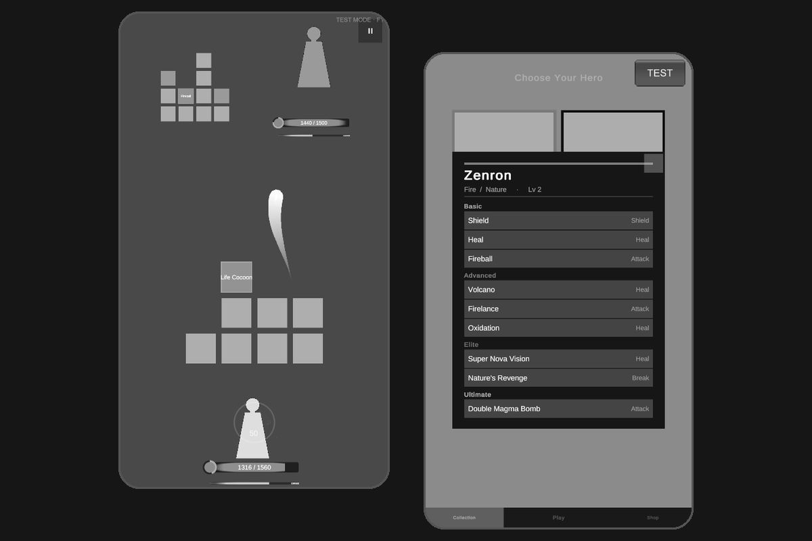

SpellBattle
A real-time 1v1 mobile duel I'm building solo in Unity 6 and C#. It starts from the core idea of Super Spell Heroes and builds its own systems and design on top of it. Two players draw paths across a board of elemental tiles, and every tile they match fuels the spells they throw at each other.
Three heroes are playable, each with a full set of attacks, shields and support spells. Heroes feel distinct even when they share an element, every spell hits a single target so fights stay tense and readable, and some shields hold hit after hit while others break on first use, so deciding when to block and when to attack really matters.
The biggest lesson so far: design systems that can grow. Stats and spell data are structured so that character progression can be added later without rewriting what already works.